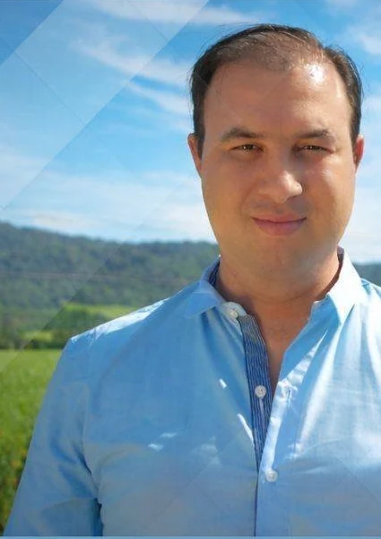

Servicios públicos
Revisión de la concesión y del costo de distribución de EJESA, fortalecimiento de la Tarifa Social y transparencia en cada componente de la factura.
Propuesta pública · Julio 2026Compromiso con los vecinos
Concejal de Libertador General San Martín
Trabajo por una ciudad más transparente, con mejores servicios públicos y más oportunidades para nuestros vecinos.

Quién soy
Soy Pablo Abdenur, concejal, comerciante y vecino de Libertador General San Martín.
Tengo experiencia directa en la actividad comercial, vinculada también al comercio DOSIS, e integro la Comisión de Hacienda del Concejo Deliberante.
Mi trabajo se centra en el control de la gestión, la transparencia, la defensa de los vecinos, los servicios públicos y el desarrollo comercial y productivo.
Antes de tomar una posición, estudio la información disponible y escucho a quienes viven cada problemática.
Ejes de trabajo
Una agenda enfocada en los problemas cotidianos de Libertador y en decisiones públicas que puedan explicarse con claridad.
Revisión de la concesión y del costo de distribución de EJESA, fortalecimiento de la Tarifa Social y transparencia en cada componente de la factura.
Propuesta pública · Julio 2026Fiscalización del presupuesto municipal, los tributos, las contrataciones y el uso de los recursos públicos desde la Comisión de Hacienda.
Defensa de la actividad comercial local y de quienes producen, trabajan e invierten en nuestra ciudad.
Acceso a la información pública, explicación clara de las decisiones y rendición de cuentas frente a los vecinos en cada acto de gobierno.
Escucha activa, reuniones abiertas y canales accesibles para que las propuestas y reclamos de los vecinos puedan transformarse en iniciativas concretas.
Defender la educación pública y acompañar iniciativas que reconozcan el trabajo docente y mejoren las condiciones educativas de nuestra comunidad.
Proyectos
Propuestas concretas para modernizar la gestión, fortalecer la economía local y defender a los vecinos.
Propuesta para transformar y fortalecer el área municipal vinculada al comercio, incorporando herramientas de desarrollo, capacitación, digitalización y acompañamiento a comerciantes, pymes y emprendedores.
Revisión de la concesión de EJESA, del costo de distribución y de la composición de la tarifa; revisión y ampliación de la Tarifa Social y mayor transparencia para los usuarios.
Impulso de mecanismos que permitan comprender el presupuesto, los gastos, las contrataciones y las decisiones que afectan a los vecinos.
Promoción de espacios de escucha y participación para recibir reclamos, propuestas e iniciativas de los barrios.
Actividad pública
En el ciclo “Cosas Nuestras” planteé revisar la concesión de EJESA y el costo de distribución, ampliar la Tarifa Social y exigir transparencia sobre la composición de la tarifa.
Ver publicación en FacebookPropuesta institucional
Trabajo en una propuesta para modernizar el área municipal de comercio y generar mejores herramientas para comerciantes, pymes y emprendedores.
Trabajo territorial
El trabajo legislativo también requiere escuchar los problemas cotidianos, analizar cada situación y acercar respuestas responsables.
Contacto
Podés escribirme por correo o seguir mi actividad pública en Facebook. También podés acercar una propuesta, una inquietud o un problema de tu barrio.